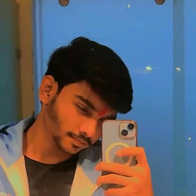

About RoboCraft
Learn robotics, AI and Python by doing. Free, with no ads.

Hi, I'm Aryan 👋
I'm a school student from Lucknow, and I built RoboCraft myself, from the lessons to the 3D robot builder.
I wanted robotics and coding to feel easy and fun for every student, not just the ones with a lab or a tutor. So I made the app I wished I had.
What's inside
- 📚 Lessons for ICSE & ISC Robotics and AI, in simple language
- 🐍 Learn Python from beginner to advanced, with Hindi videos
- 🛠️ 3D Design Studio and robot arena to build and test robots
- ⚡ Circuit lab to try circuits safely
- 📝 Practical file maker that writes a full file for you
- 🏆 Quizzes, XP, coins and a shop to keep learning fun
My promise
- RoboCraft is free to use, with no ads.
- Your data stays private. See the privacy policy.
- I keep improving it based on what students tell me.
Say hi
Ideas, bugs or just feedback? Use Settings → Report a problem in the app, or see the contact page.
© 2026 Aryan Sonkar · RoboCraft is made & licensed by Aryan · All rights reserved